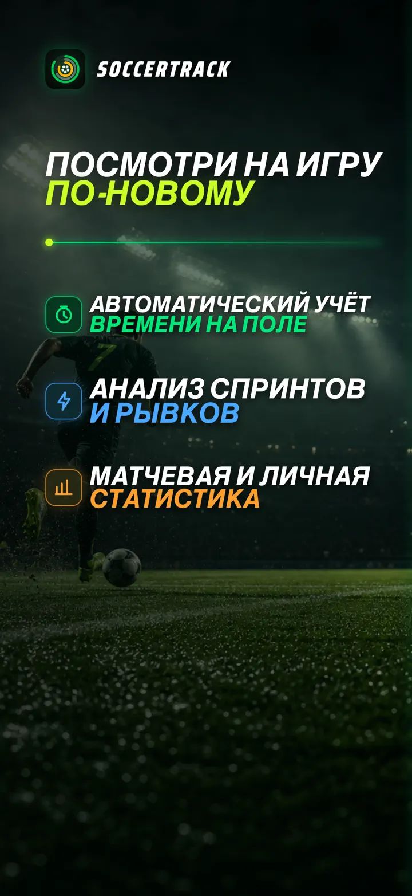
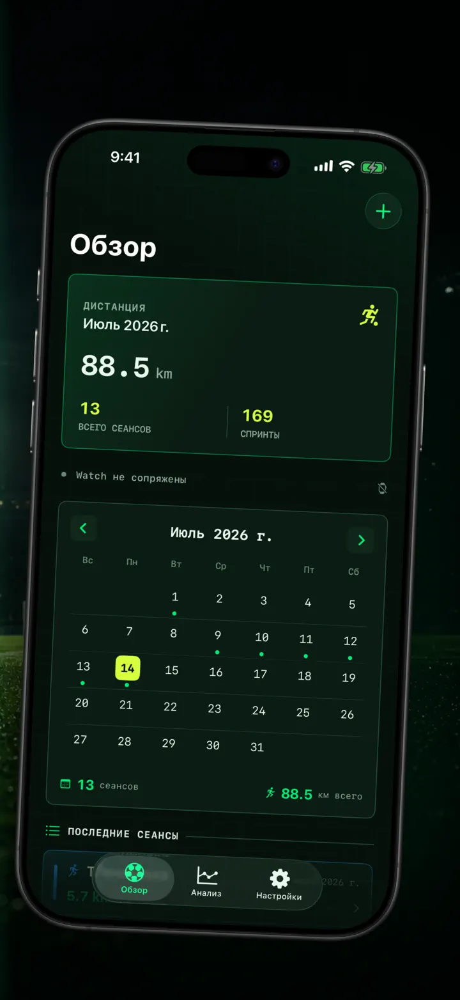
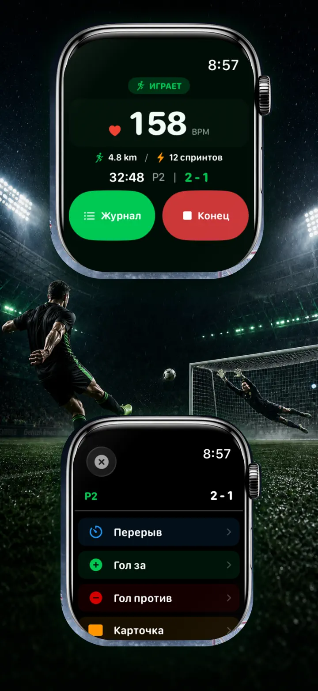
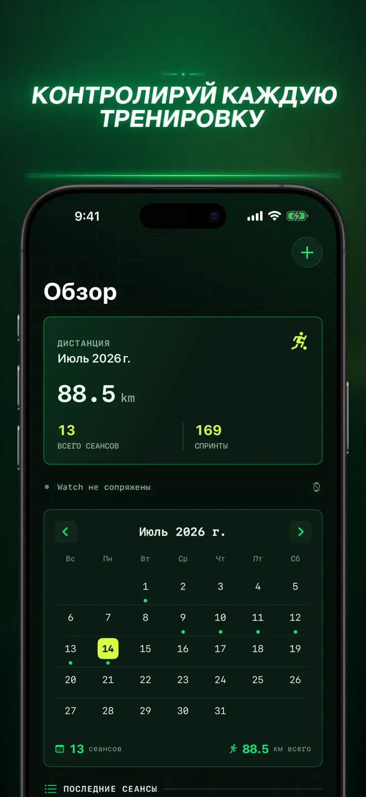
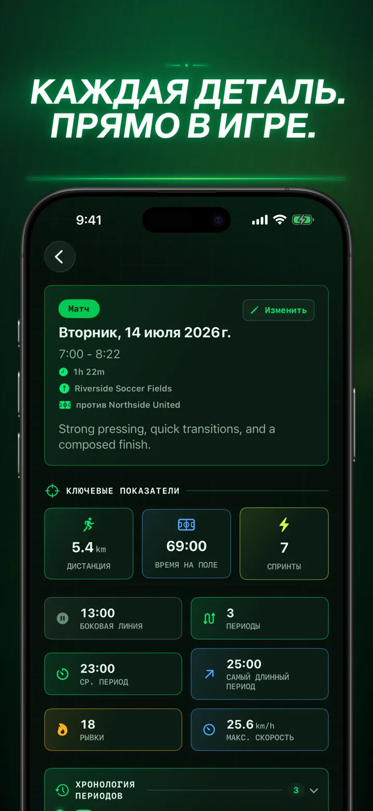
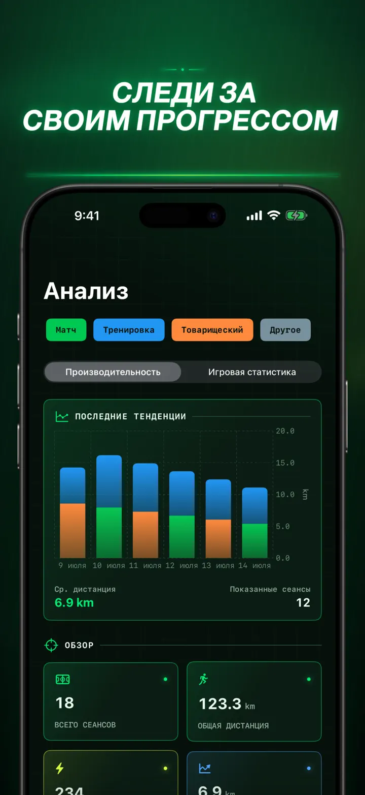
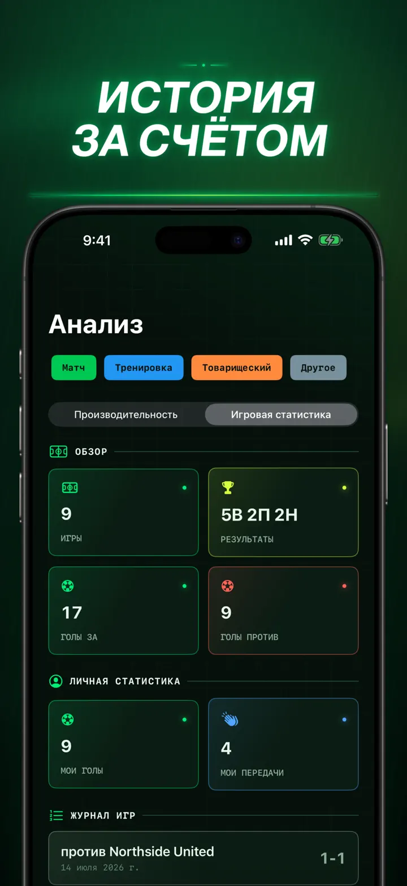
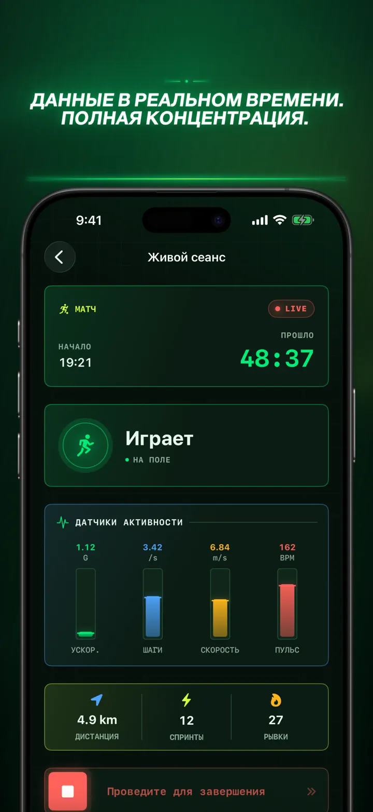
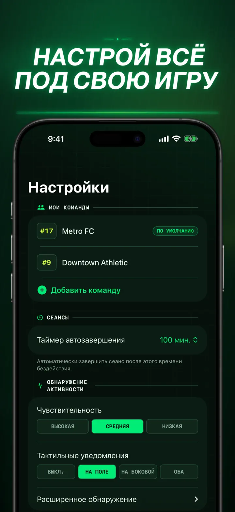
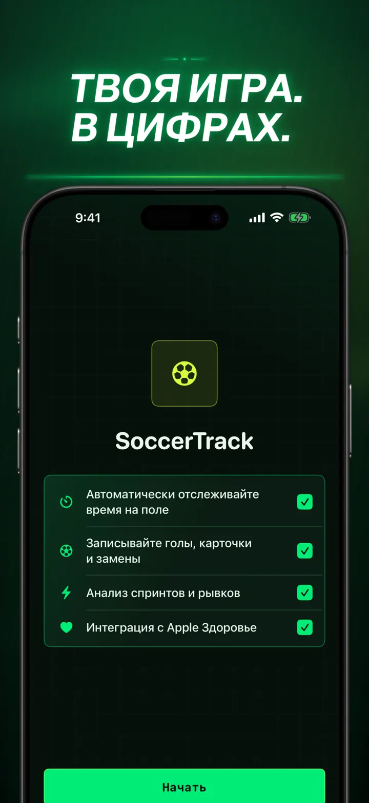

Soccer Time Track
Футбол: время и анализ матча
Запустите тренировку и играйте. Apple Watch сам отделит время на поле от скамейки и запишет показатели, спринты, события матча и тренды.
Загрузить из App Store
О приложении
Посмотрите на свою игру иначе.
Soccer Time Track превращает Apple Watch в помощника футболиста, которому важен не только итоговый счёт. Запустите тренировку с запястья, сосредоточьтесь на игре, а затем изучите подробную картину своей нагрузки на iPhone.
АВТОМАТИЧЕСКИЙ УЧЁТ ВРЕМЕНИ НА ПОЛЕ
Узнайте, когда вы действительно были в игре. Данные движения, тренировки и геопозиции помогают отличать игру, низкую активность и время на скамейке. Вы получаете:
- Время на поле и на скамейке
- Игровые отрезки и понятную временную шкалу
- Подробный разбор всей тренировки
МАТЧ С ВАШЕГО ЗАПЯСТЬЯ
Выберите Матч, Тренировка, Товарищеский матч или Другое. Во время игры отмечайте:
- Голы своей команды и соперника
- Свои голы и голевые передачи
- Жёлтые и красные карточки
- Замены и смену периодов
ВАША ИГРА В ЦИФРАХ
Узнайте больше, чем количество минут:
- Дистанция
- Средняя и максимальная скорость
- Спринты и рывки высокой интенсивности
- Пульс и активные калории
- Каденс и ускорение
ДАННЫЕ В РЕАЛЬНОМ ВРЕМЕНИ, ПОЛНЫЙ ФОКУС
Подключённый iPhone может показывать показатели в реальном времени, пока Apple Watch продолжает записывать тренировку. Вы сосредоточены на матче, а данные собираются в фоне.
СЛЕДИТЕ ЗА ПРОГРЕССОМ
Храните матчи, тренировки, товарищеские встречи и другие занятия в одной истории. Изучайте тренды и личные рекорды, сравнивайте результаты и добавляйте команду, номер на форме, соперника, место и заметки, чтобы сохранить контекст каждого матча.
Нужны данные в другом месте? Экспортируйте тренировки, игровые отрезки и события матча в CSV или JSON.
ДЛЯ APPLE WATCH И APPLE HEALTH
С вашего разрешения Soccer Time Track использует данные тренировки, пульса, движения и геопозиции для аналитики и сохраняет завершённые футбольные тренировки в Apple Health. Для автоматического отслеживания требуются Apple Watch. Тренировку также можно добавить вручную на iPhone.
ВАШИ ДАННЫЕ, ВАША ИГРА
Тренировки остаются на ваших устройствах и, если включена синхронизация iCloud, в вашей личной базе данных iCloud. Soccer Time Track не требует учётной записи, не показывает рекламу и не использует стороннюю аналитику.
Хватит гадать, сколько вы играли. Узнайте, как вы использовали каждую минуту.
Политика конфиденциальности: https://masawata.net/SoccerTimeTrack/privacy-policy.html Условия использования: https://www.apple.com/legal/internet-services/itunes/dev/stdeula/
Снимки экрана









Soccer Time Track
Запустите тренировку и играйте. Apple Watch сам отделит время на поле от скамейки и запишет показатели, спринты, события матча и тренды.
Загрузить из App Store